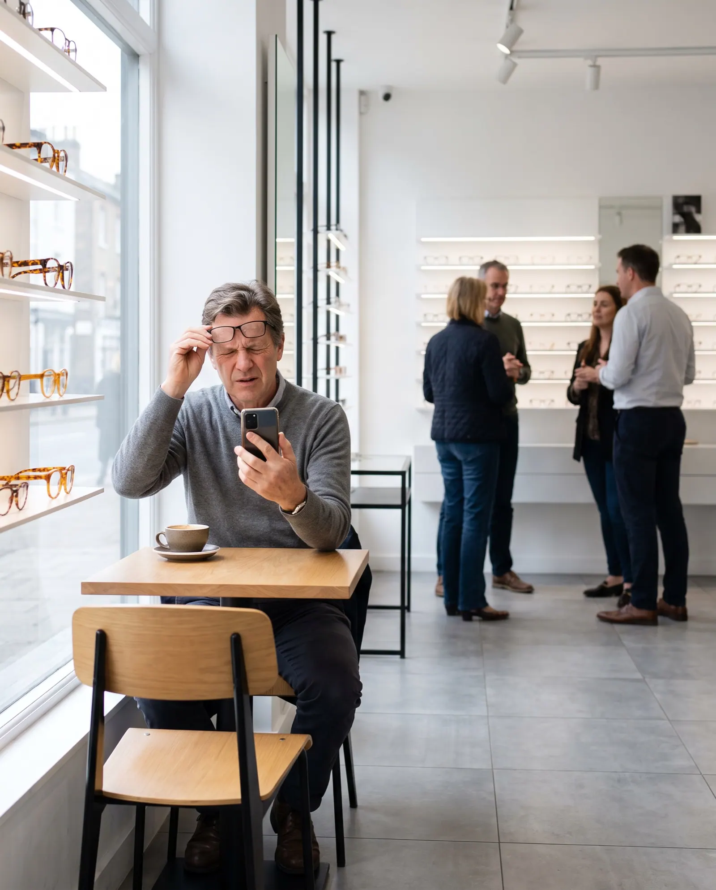
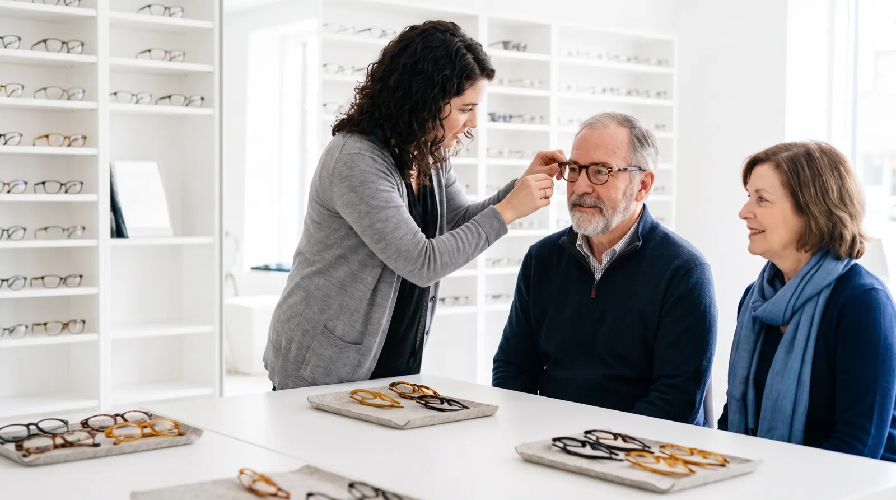
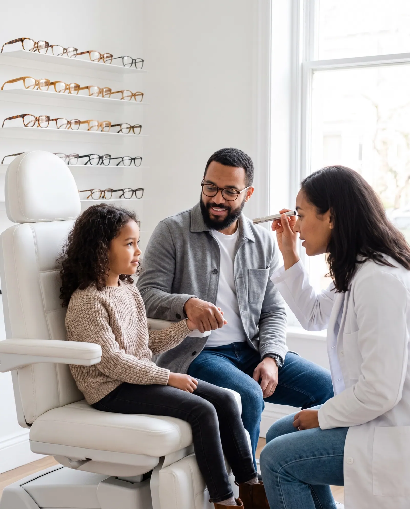
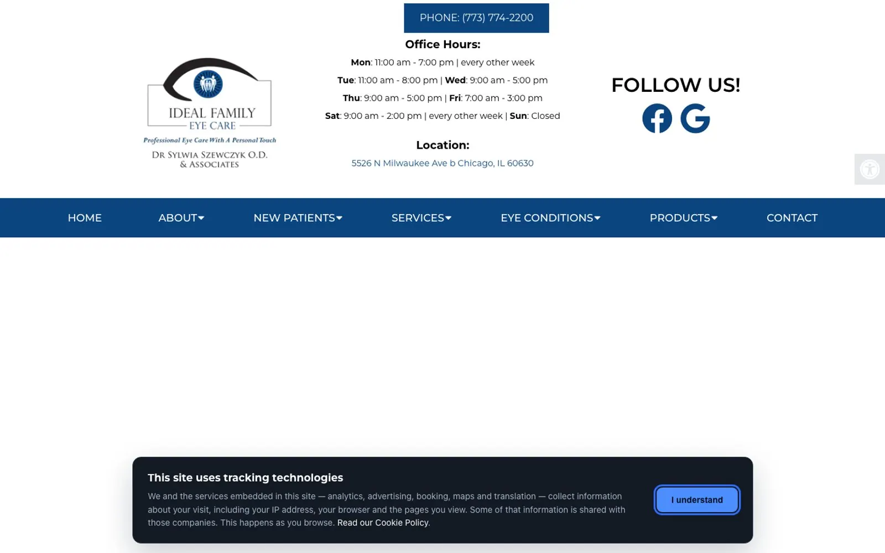
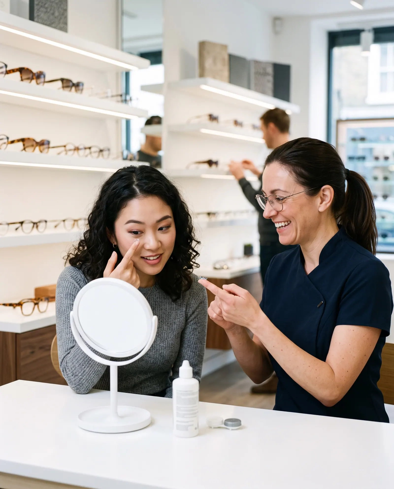

Patients read the websitebefore the chartand most cannot find the answer they came for
We read the websites of 123 independent optometry practices and optical boutiques in the US the way a patient does: on a phone, asking whether their vision plan is taken, what an exam costs and when they can be seen.
0 practices
Four kinds of practice
Fourteen checks
The State of Independent Optometry Websites · Q4 2026 · edition 2026-Q4
10%20/200
2of practices20/100
3answer20/70
420/50
520/40
6Clikiti Research Q4 202620/20
720/15
The headline
of the websites in this study answer the patient's question.
Patients ask ten questions. The median site answers five.
Across 123 independent optometry websites, the median site answers six of the ten patient questions this edition tests. 7% show any price; 51% name a vision plan they take.1
What a patient can find out before calling
We turned ten questions people ask before they book an eye exam or buy glasses into ten checks, then read each site for an answer a patient could find on a phone. Read it like a chart: the most answered line is the largest.

Share of all websites answering each question · red = fewer than a third · tick = half
Figure 1. Share of sites that answer each question on the home page or a page it links to, read from the served HTML. Sorted from most to least answered. Below the red line, fewer than a third of practices answer, as on a chart, where the lines below 20/20 are the ones most people miss.

Four kinds of practice, side by side
Family optometry practices (43): median score 77, a price shown on 2%, online booking on 88%. Pediatric and vision therapy (27): median score 78, a price shown on 4%, online booking on 78%. Specialty contact lens and dry eye (25): median score 74, a price shown on 16%, online booking on 92%. Optical boutiques with an optometrist (28): median score 77, a price shown on 11%, online booking on 86%.
| Kind of practice | Median score | Out of 100 | Sample |
|---|
Where each website scores
Overall website score out of 100, one dot per site; the tortoiseshell rule is each group's median
Figure 2. Overall website score out of 100, one dot per site. The tortoiseshell rule marks each group's median.

The families who look elsewhere
Parents ask whether a practice sees children.
A practice that says which age it starts at, how long the exam takes and whether the vision plan covers it meets parents at the start of the school year, when most of them search.
Four practices, up close
Four real sites from this edition, one strong, two in the middle and one weak. Each photograph shows the kind of moment its findings describe; the practice itself stays anonymous. The number is the overall website score; each dot is one check, filled when the site passes it.
Ideal Family Eye Care
Family optometry practice, Chicago, IL. It answers 9 of the 10 patient questions this edition tests, loads fast on phones and describes its images; like most sites in this study, it has yet to pass text contrast (WCAG 1.4.3). Its overall website score is 76/100. Named as a positive example; every other site in this report is anonymous.

What it does well
- Eye exams can be booked or requested online
- Vision plans named (VSP, EyeMed and so on)
- Children's eye exams offered
- Contact lens exams or fittings offered
- Eye emergencies or same-day visits stated
- Frame brands named
- Optometrists named, with their training
- Tappable phone plus opening hours
- Reviews marked up, in a widget or quoted
- Every image has a text description (WCAG 1.1.1)
- Clikiti pillar scores of 90 or more: speed 97, SEO 97
Where it could still improve
- Not found on the home page or the pages it links to: a price shown: an exam, a fitting or eyewear
- Usability pillar 42/100
The sites patients with poor sight struggle to read
An eye-care website is read by more people with low vision than almost any other. A patient using a screen reader, zoomed text or an old phone on a weak signal is still a patient. These checks measure whether the site lets them in.3
Table 1. Technical checks, share of the 123 sites that fail each one.

How the sites were read
Read
The home page and up to twelve pages it links to (services, insurance, prices, frame brands, eyewear, contact lenses, children, emergencies, doctors, reviews, booking, contact), read as a server delivers them. The patient questions are answered here, by fixed published rules (Appendix A4).
Measure
Google Lighthouse (PageSpeed Insights) in a phone and a desktop render, with Chrome UX Report field data where it exists: load time, contrast and image descriptions. Repeatable.
Review
An expert usability review of each home page against Nielsen's heuristics, used only in the usability part of the score. Every issue must name the heuristic, a severity and the element, or it is dropped.
Read the full methodology Sample, definitions, scoring, precision and limitations, in Appendix A.

For agencies and freelancers
What this means for agencies
what to fix first, and how to pitch it
For small agencies and freelancers who sell websites to independent optometrists and optical boutiques. We scanned 123 of their websites: 2% score under 60 out of 100, and 70% leave at least three of the questions patients ask unanswered. Here is where the winnable work is, which problems to lead a pitch with, and how to show them without days of spec design.
Who is realistic to win
Specialty contact lens and dry eye are the most winnable: the lowest median score in this report (74 out of 100), and 0% of them score under 60. Their problems are visible, specific and fixable by a small team.
| Type | Sites | Median | Under 60 |
|---|---|---|---|
| Family optometry practices | 43 | 77 | 7% |
| Pediatric and vision therapy | 27 | 78 | 0% |
| Specialty contact lens and dry eye | 25 | 74 | 0% |
| Optical boutiques with an optometrist | 28 | 77 | 0% |
Score out of 100. "Under 60" is the share of sites that miss most of what a patient looks for.
5 problems to lead a pitch with
- 93%What will an eye exam cost me? Content
Publish the self-pay price of a routine eye exam and a contact lens fitting, and a starting price for frames or a glasses package.
Chains post their exam price. A patient without vision cover finds no number on your site at all.
- 88%Loads in under 2.5 s on a phone Build
Resize and compress the hero image, defer scripts, aim for under 2.5 s on a phone.
Your home page takes several seconds to appear on a patient’s phone.
- 71%Text contrast passes 4.5:1 Quick fix
Raise text contrast to at least 4.5:1 in the theme.
On an eye-care site, faint text is the first thing a low-vision patient meets, and it is a WCAG failure.
- 67%Do other patients vouch for you? Quick fix
Show the practice’s patient reviews on the site, with Review or AggregateRating markup.
Your patients already praise you elsewhere. Your own site does not show it.
- 50%Which frames do you carry? Content
An eyewear page that names the frame brands and designers you carry, with photographs of the optical.
Your frame wall is why people choose you over a chain, and the website does not show it.
Share of sites with the problem. WCAG items are accessibility failures. Every check cites a standard in the method section.
How to show a prospect their problems, and a redesign
- 1Lead with their problem, not your services
Open with one question the site fails, for example "What will an eye exam cost me?" (93% of sites in this report miss it), and show the exact page where the answer should be.
- 2Put a number on it
Compare their site with the sector: across 123 independent optometry practices and optical boutiques sites, the median scores 77 out of 100 and answers 6 of the 10 questions patients ask. A number travels further inside the client than an opinion.
- 3Show the fix without days of spec work
A rough redesign that answers those questions persuades better than a proposal, but it usually costs a designer a day or two per prospect. You can sketch it by hand, or use Clikiti: the scan is free and shows any site's problems in about a minute, and paid plans draft a redesign of the home page from the prospect's own brand, from about $2.33 per pitch.
Scan a prospect's site free No sign-up. You see what the prospect would see.
Show every practice what its patients see
Clikiti reads a practice's site the way a patient does, states what it found, and generates the redesign you present before the first call.
See your market on ClikitiMethodology
How this study was designed, who was included, what was measured and how far the results can be relied on. It is written so that an agency can share it with a practice owner who wants to check the evidence behind a pitch.
A1. The research question
When someone needs an eye exam, new glasses or contact lenses, or has a red or injured eye, and looks an independent optometrist up online, usually on a phone, can they find out whether they can book online, whether their vision plan is taken, what it will cost, whether the practice sees children and fits contact lenses, whether it can see them today, which frames it carries, who will examine them, how to reach it and when it is open, and whether other patients vouch for it?
Population. Independently owned US optometry practices with one to three locations and their own website, in four groups: family optometry practices, pediatric and vision therapy practices, specialty contact lens and dry-eye clinics, and independent optical boutiques with an optometrist on site. These are the eye-care businesses a small or mid-size web agency can realistically win as clients.
A2. Who was studied
The sample was built from local search listings, city by city, then screened so that every site in it is one an independent agency could realistically win.
| Source | What it contributes | Sites |
|---|---|---|
| Local search, family optometry | Independent family and general optometry practices found in local search results, city by city | 99 |
| Local search, pediatric and vision therapy | Pediatric optometry, vision therapy and myopia-control practices found in local search results, city by city | 42 |
| Local search, specialty contact lens and dry eye | Specialty contact lens (scleral, ortho-k, keratoconus) and dry-eye clinics led by optometrists, found in local search results, city by city | 31 |
| Local search, optical boutiques | Independent optical boutiques and eyewear studios with an optometrist doing eye exams on site, found in local search results, city by city | 26 |
Included
- An independently owned practice with one to three locations and its own website (not a directory, marketplace or social profile)
- An optometrist examines patients on site
- Based in the United States
- Home page responds and shows the practice it claims to be (each home page title was checked before scanning)
Excluded
- Retail optical chains and franchises (for example LensCrafters, Pearle Vision, Visionworks, America's Best, Eyemart Express, Warby Parker, For Eyes, Texas State Optical) and any practice with four or more locations or in several states
- Optical departments in big-box, warehouse-club and department stores (Walmart, Sam's Club, Costco, Target) and practices hosted inside them
- Practices owned by consolidators whose websites are run centrally (for example MyEyeDr, Eye Care Partners, ClarksonEyecare, AEG Vision, Acuity Eyecare Group, Total Vision)
- Hospital and university eye clinics, and ophthalmology, LASIK and cataract surgical groups
- Directories, marketplaces and booking platforms (Yelp, Zocdoc, Healthgrades, AOA Doctor Locator)
- Parked, placeholder, password-protected, hijacked or unreachable sites, and duplicates
| From list to sample | Sites |
|---|---|
| Candidates listed | 150 |
| Removed at screening: the site refused automated visitors or served them a bot challenge instead of the page (22) | −22 |
| Removed at screening: parked or placeholder (1) | −1 |
| Removed at editorial review: a second website of a practice already listed (1) | −1 |
| Cohort | 126 |
| Region (US Census) | Family optometry practices | Pediatric and vision therapy | Specialty contact lens and dry eye | Optical boutiques with an optometrist | All |
|---|---|---|---|---|---|
| Northeast | 11 | 5 | 8 | 6 | 30 |
| Midwest | 8 | 8 | 5 | 8 | 29 |
| South | 13 | 7 | 6 | 7 | 33 |
| West | 11 | 7 | 6 | 7 | 31 |
| All regions | 43 | 27 | 25 | 28 | 123 |
A3. How the sites were read
Pages. The home page, then for each of twelve topics (services and eye exams, insurance, payment and prices, frame brands, eyewear, contact lenses, children's eye care, emergencies, doctors and about, reviews, booking, contact) the best-matching link on the home page.
Speed and accessibility. Google PageSpeed Insights (Lighthouse) on a mid-range phone profile and on desktop, plus Chrome UX Report data from real visitors over the previous 28 days where Google publishes it for the site.
Crawler conduct. One request at a time to each site, at least 400 ms apart, at most thirteen pages per site; robots.txt is read and obeyed for every page requested; a site that refuses is left out and never retried. The crawler identifies itself as Mozilla/5.0 (compatible; ClikitiResearch/1.0; +https://clikiti.com).
A4. What was measured
10 questions patients ask before they book an eye exam or buy glasses, answered from what each site publishes, and 4 technical checks against published standards. A check passes only when the rule below is met; anything the crawler cannot confirm counts as not answered.
| Question | Counts as answered when | Standard |
|---|---|---|
| Can I book an eye exam online?Eye exams can be booked or requested online | A link, button or embedded scheduler lets the visitor book or request an eye exam or appointment online (a phone number or a 'contact us' link alone does not count; patient forms, bill payment and portals do not count). | Clikiti patient question 1 of 10 |
| Do you take my vision plan?Vision plans named (VSP, EyeMed and so on) | At least one vision or medical plan the practice takes is named (VSP, EyeMed, Davis Vision, Spectera, Superior Vision, Avesis, MES, NVA, Medicare, Medicaid, Blue Cross and so on), or the practice says plainly that it takes no insurance. | Clikiti patient question 2 of 10 |
| What will an eye exam cost me?A price shown: an exam, a fitting or eyewear | A dollar price is shown for an eye exam, a contact lens fitting, a vision therapy evaluation, a dry-eye treatment, or a pair or package of glasses (discounts, savings and financing limits do not count). | Clikiti patient question 3 of 10 |
| Do you see children?Children's eye exams offered | The practice says it examines children: a children's or pediatric eye exam, an infant (InfantSEE) or school-age exam, a starting age, or exams for children and adults. Myopia management alone does not count. | Clikiti patient question 4 of 10 |
| Can I get contact lenses fitted?Contact lens exams or fittings offered | The practice says it examines patients for or fits contact lenses (a contact lens exam, fitting or evaluation, or specialty lenses such as scleral or ortho-k). Selling lenses online alone does not count. | Clikiti patient question 5 of 10 |
| Can you see me today for a red or injured eye?Eye emergencies or same-day visits stated | The practice says it sees eye emergencies or urgent problems, or offers same-day or walk-in visits, for example a red eye, an eye injury, a foreign body or sudden flashes and floaters. | Clikiti patient question 6 of 10 |
| Which frames do you carry?Frame brands named | Three or more eyewear brands are named on the home, eyewear or about page. | Clikiti patient question 7 of 10 |
| Who will examine me?Optometrists named, with their training | At least one optometrist is named with a qualification, their profession or their training: O.D., 'Optometrist' beside the name, an optometry school, a residency, or fellowship of a professional academy (FAAO, FCOVD, FSLS). | Clikiti patient question 8 of 10 |
| How do I reach you, and when are you open?Tappable phone plus opening hours | The home page has a tappable phone link, and the home, contact or about page states opening hours (a day and a time range). | Clikiti patient question 9 of 10 |
| Do other patients vouch for you?Reviews marked up, in a widget or quoted | Patient reviews are marked up for search engines (Review or AggregateRating structured data), shown through a review widget, or at least two patient testimonials are quoted on the home, about or reviews page. A link to a review site alone does not count. | Clikiti patient question 10 of 10 |
| Technical checks | ||
| Loads in under 2.5 s on a phoneLoads in under 2.5 s on a phone | Real visitors on phones see the main content within 2.5 seconds (Chrome UX Report, 75th percentile). Where Google publishes no visitor data, the phone lab test is used. | Core Web Vitals · LCP |
| Text contrast passes 4.5:1Text contrast passes 4.5:1 | No text on the home page fails the WCAG 1.4.3 minimum contrast of 4.5:1, in either the phone or desktop test. | WCAG 1.4.3 |
| Images have text descriptionsImages have text descriptions | Every meaningful image on the home page has a text description (WCAG 1.1.1). | WCAG 1.1.1 |
| Optician, Optometric or MedicalClinic structured dataOptician, Optometric or MedicalClinic structured data | The site describes the practice to search engines with Optician, Optometric, MedicalClinic, MedicalBusiness or Physician structured data. | Schema.org · Optician |
A5. The website score
Each site's overall score (0 to 100) is Clikiti's website score, rubric 2.0.0. It measures the website, not the practice, and the patient questions above do not feed it. It is a weighted mean of five pillars:
| Pillar | Weight | Based on |
|---|---|---|
| Usability | 30% | Checks of the home page for broken links and images, and an expert review of the page as rendered on a phone and on a desktop screen, against Jakob Nielsen's ten usability heuristics. Each issue must name the heuristic, a severity on the Nielsen Norman Group scale and the exact element or wording; issues without all three are discarded, and two independent passes must agree. |
| Speed | 25% | Google Lighthouse on a mid-range phone (60%) and on desktop (20%), and real-visitor Core Web Vitals from the Chrome UX Report (20%) where available. |
| Accessibility | 25% | Google Lighthouse accessibility audits (70%) and Clikiti's own WCAG checks of the served page (30%). |
| Search | 10% | Google Lighthouse SEO audits (60%) and Clikiti's own search checks of the served page (40%). |
| Trust | 10% | Google Lighthouse best-practice audits (40%) and security header checks (60%). |
Within a pillar, each issue costs points by severity (critical, high, medium, low) and by how many times it occurs; issues based on judgement count at 70% of measured ones, and duplicates of the same root cause count once. On the four practice profiles, the number out of 100 is this overall score, and each dot is one check in its group: filled when the site passes it, hollow when it does not.
A6. Precision
With 123 sites, a share reported for the whole sample is precise to within ±8.8 percentage points at 95% confidence (worst case, a 50% share; 1.96 × √(0.25/n)). By type: family optometry practices ±14.9 (n = 43); pediatric and vision therapy ±18.9 (n = 27); specialty contact lens and dry eye ±19.6 (n = 25); optical boutiques with an optometrist ±18.5 (n = 28). Differences between types smaller than these margins should be read as similar. Percentages are rounded to whole numbers; medians are the middle value of the sites in a group.
A7. Quality control
- Every home page in the cohort was fetched and its title checked against the listed practice before scanning
- Every home page was checked for hijacked content (gambling, pharmacy, adult and crypto spam) before scanning
- Every home page was checked for a second website of the same practice (shared phone numbers and names)
- Detection rules were checked against the evidence they record for a sample of practices in every group, and revised before the final run
- Every published figure is recomputed from the data at build time, and a statement in the text that the data does not support stops the build
- Results are published only after automated checks for missing data, anonymity, accessibility of the report itself and the margin of error statement pass
A8. Limitations
- A point-in-time snapshot: sites change, and a site may have improved or declined since it was read.
- Only public pages were read: the home page and pages it links to. Patient portals, online stores and multi-step booking flows were not tested.
- Answers are read from the page as a server delivers it. Content that only appears after scripts run in the browser (some schedulers and review widgets) is not seen, which the study counts as a gap a search engine or a slow phone would also meet.
- 22 candidates blocked automated visitors or served them a bot challenge and are not in the study; sites behind such protection may differ from those studied.
- The study reports what a website shows. It does not judge any practice's eye care, eyewear or prices, and it is not medical advice.
- Automated accessibility tests find only part of what WCAG covers; keyboard and screen-reader use need a manual audit.
- The sample is a structured list of real, independent practices, not a random draw. Margins of error are given as a guide to precision, not as a guarantee that the results hold for every practice in the country.
A9. Data, licence and corrections
The aggregate results are published as CSV and JSON beside this report under the Creative Commons Attribution 4.0 licence: you may reuse, adapt and share them, including in client proposals, with a credit to Clikiti and a link. No per-site results are published. Corrections and removal requests are reviewed and answered personally; see the end of this report.
Practices in this study
The 123 websites in this edition, by type. This list says who was scanned and nothing more: results in this report are shown only in aggregate or anonymously.
Family optometry practices (43)
- 20/20 Vision CarePittsburgh, PA
- 5 Points Eye AssociatesJacksonville, FL
- Advanced Family EyecareOklahoma City, OK
- Allens Creek Family OptometryRochester, NY
- Amerine Eye CareLittle Rock, AR
- Bauer & Clausen OptometryBillings, MT
- Blink EyecareSpokane, WA
- Boise Family Eye CenterBoise, ID
- Capitol OptometrySacramento, CA
- Chroma OpticsBurlington, VT
- Cutlerville EyecareGrand Rapids, MI
- DeCesare Eye AssociatesProvidence, RI
- Excel EyecareCharlotte, NC
- Eye 2 Eye Family OptometrySacramento, CA
- Eye Care Associates of HawaiiHonolulu, HI
- Eyes on 45thFargo, ND
- Eyes On DallasDallas, TX
- Family Vision Care of RichmondGlen Allen, VA
- Fox Chase Family Eye CarePhiladelphia, PA
- Fusion Eye CareRaleigh, NC
- Grove Eye CareRichmond, VA
- Ideal Family Eye CareChicago, IL
- Innovative Eye CareCharlotte, NC
- JC EyesJersey City, NJ
- Jeffrey M. Sakai, O.D.Honolulu, HI
- Littlefield Eye AssociatesKansas City, MO
- Madeira OpticalCincinnati, OH
- Manchester Bedford Eye CareManchester, NH
- Natural State EyecareLittle Rock, AR
- Nevada Vision GroupReno, NV
- Nilsen Eye CareRichmond, VA
- North Park Family VisionChicago, IL
- Optique VisionAlbany, NY
- Premier Family Eye CareGrand Rapids, MI
- Providence Eye AssociatesProvidence, RI
- Serenity Eye CareSpokane, WA
- Southside Eyecare & OpticalAnchorage, AK
- Taylor Family EyecareAlbuquerque, NM
- Vision Source of WorcesterWorcester, MA
- Vision Veritas EyecareDallas, TX
- Visionary Eye CareLutz, FL
- West End Eye CareHartford, CT
- Westrum OptometryDes Moines, IA
Pediatric and vision therapy (27)
- A1A Family Eyecare (Vision Therapy Specialists)Jacksonville, FL
- Advanced Eyecare & TherapiesSpokane, WA
- Allentown Vision Therapy (Dr. Jay Feder, Springhouse Eye Care)Allentown, PA
- Center for Vision and LearningDes Peres, MO
- Child & Family EyecareWichita, KS
- Cook Vision Therapy CenterMarietta, GA
- Exceptional VisionPalmetto Bay, FL
- Eyes of NMAlbuquerque, NM
- Focus Vision Therapy CenterEagle, ID
- Forest City VisionBeachwood, OH
- Hellerstein & Brenner Vision CenterGreenwood Village, CO
- Impact Vision TherapyColorado Springs, CO
- Lighthouse Optometric Vision Performance CenterSan Jose, CA
- Lisa B. Dibler, O.D. (Developmental Optometry & Vision Therapy)Town and Country, MO
- Lumen VisionFargo, ND
- Mackowsky Visual Learning & Rehabilitation ClinicRaleigh, NC
- Michael L. Smookler, O.D.Boston, MA
- Phyllis Liu, O.D., FCOVDWoodbridge, CT
- Portland Vision TherapyPortland, ME
- Sensory Focus (The Vision Development Team)North Royalton, OH
- The Center for Vision DevelopmentAustin, TX
- The Optometry Center for Vision TherapyAustin, TX
- The Vision Therapy Center of IndianaIndianapolis, IN
- Vision Therapy of San AntonioSan Antonio, TX
- Vision Therapy Specialists (Dr. Susan Danberg)Glastonbury, CT
- Visions Eye Care + Therapy CenterSioux Falls, SD
- Visual Processing OptometryLos Angeles, CA
Specialty contact lens and dry eye (25)
- Ala Moana Advanced Eye ClinicHonolulu, HI
- Beverly Hills Optometry: Dry Eye CenterBeverly Hills, CA
- Boyle Eye SpecialistsScranton, PA
- Brandon EyesMadison, WI
- Cannon EyeCareSeattle, WA
- Compton Eye AssociatesNew York, NY
- Connecticut Contact Lens InstituteWilton, CT
- Cornea and Contact Lens Institute of MinnesotaEdina, MN
- Dry Eye Center of AlabamaVestavia Hills, AL
- Envision OptometryBoston, MA
- Global Vision Rehabilitation Center (Eye Freedom)Miami, FL
- Heartland Eye ConsultantsOmaha, NE
- IndividualEyes Dry Eye CenterPhoenix, AZ
- Kurtin Vision Specialists (Scleral Lens Center DFW)Addison, TX
- Lighthouse VisionMilford, CT
- Miami Contact Lens InstituteMiami, FL
- Montebello Optometry Eye Clinic & Dry Eye CenterMontebello, CA
- Scleral Lens Center of Excellence (Gregory J. Fagert, OD)Columbiana, OH
- SeeSharp Eye CarePhiladelphia, PA
- Shadyside Eye AssociatesPittsburgh, PA
- Sokol Advanced EyeCare (Whole Health Optometry)Madison, WI
- The Charlotte Contact Lens InstituteMatthews, NC
- The Raleigh Contact Lens InstituteCary, NC
- Tree City EyecareBoise, ID
- Vision On ParkNew York, NY
Optical boutiques with an optometrist (28)
- A Brighter ImageWashington, DC
- Austin Eye StudioAustin, TX
- Bourse Optical BoutiquePittsburgh, PA
- Capitol Hill VisionSeattle, WA
- Columbus EyeworksColumbus, OH
- Dr. Sorrentino & Dr. Murzynski Family Eyecare and Eyewear BoutiqueBuffalo, NY
- Eversee Boutique EyecareWinnetka, IL
- Eye EyeSeattle, WA
- Eye Spy OpticalChicago, IL
- Eyedeals OptometryMinneapolis, MN
- Eyes In Disguise OptometrySan Francisco, CA
- InnerVision EyewearPhiladelphia, PA
- Lakefront EyecareNew Orleans, LA
- Lumière OptometrySan Francisco, CA
- Madison Optical CenterMadison, WI
- McCulley Optix GalleryWest Fargo, ND
- Moss OpticalMinneapolis, MN
- Music City OpticalNashville, TN
- OptiquePhiladelphia, PA
- OptiqueAustin, TX
- Optix on DownerMilwaukee, WI
- Salle OpticiansAtlanta, GA
- South End EyeBoston, MA
- SpectaclePortland, OR
- The Eye StudioPortland, OR
- True Eye CareDenver, CO
- VEA Eye Health ProfessionalsAtlanta, GA
- Wise Vision HobokenHoboken, NJ
About this study
This report is based on automated scans of publicly available home pages, and pages they link to, run on 2026-10-15. Its findings are a point-in-time technical snapshot of each website. They are not a judgement of any practice's eye care, eyewear or prices, and automated checks may contain errors. This report is not medical advice, and it is not a judgement of any practice’s clinical care, eyewear or prices. Clikiti is not affiliated with, and does not endorse, any practice listed here; trademarks belong to their owners. The report is provided “as is” under CC BY 4.0, without warranty of any kind. Every person in this report's photographs is AI-generated; none is a real person. The one practice screenshot is the featured practice's own home page, shown unaltered.
Remove my practice from this study
We review every request and reply when it's done; removed practices are excluded from future editions.